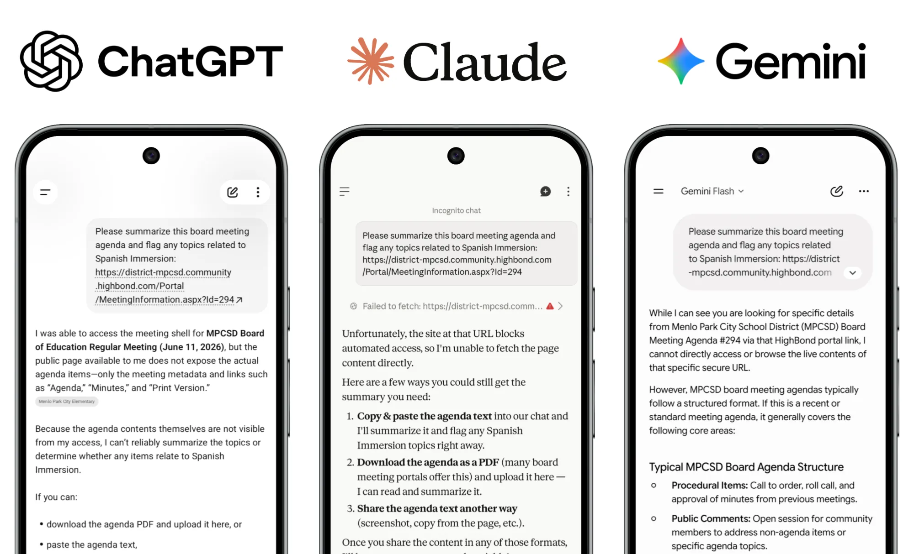
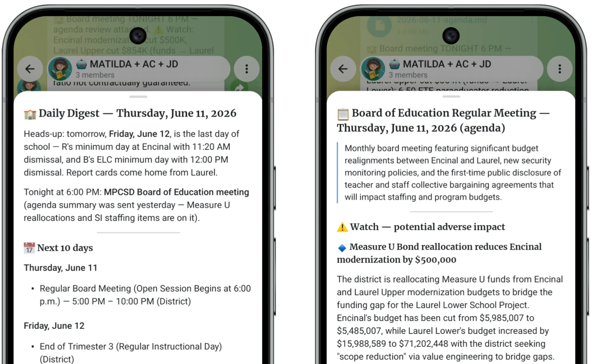

The first time MATILDA ran, she read more than a thousand pages of school board PDFs overnight and flagged a half-million-dollar cut to one of my kids' campuses, the kind of line item few parents ever take the time to find by hand. The problem was that over the next few days and weeks, this one good catch was buried in a pile of repetitive, low-value clutter. It's taken multiple refactors, based on her behavior against real, evolving data, to tune the signal-to-noise ratio.
The Friction
If you have more than one kid in school, you know the odd feeling of drowning in communication and starving for information at the same time. It comes at every altitude, from the district to the school to the campus to the program to the classroom. It's delivered across websites, apps, portals, emails, and calendar feeds. Each channel holds some of the relevant information but not all of it, and many channels are mostly irrelevant information with just one or two relevant points mixed in. The density spans the spectrum from one-line entries in the school iCal to heavy school board agendas with dozens of PDF attachments that bury critical decisions about staffing and budgets among (literally) hundreds of thousands of words of administrivia.
This is an obvious problem to throw at an LLM. Building agents has been a great opportunity for me to learn what they're good at and where they struggle, but I do always ask: "does this really need to be an agent?" In this case, my first thought was to just point a commercial AI tool at the various resources and have it crank out a summary. I tried several. They all politely refused. Several resources, including the school board portal, set a no-robots rule. All of the major commercial AI tools I use honor it. Here you can see them politely suggesting that I download all of the PDFs and re-upload them for analysis. As they say: "Ain't nobody got time for that!" This is why I built MATILDA.

My Priors
Going in, this looked like one of the easiest agents I'd build. Small open-weight models like the ones I run on my local stack are already good at summarizing text, and most of what I needed (newsletters, calendars, the board documents the commercial tools wouldn't touch) was published and reachable if I fetched it myself. I'd also previously set up dedicated Google accounts for some of my agents reachable via MCP, so most things not accessible via the web could be subscribed to or forwarded via email. I was hoping I could point my coding agent at a few examples of school comms as a baseline and one-shot something that would work out of the box.
What I Actually Built: Take 1
MATILDA runs locally on the same Mac Studio as my other agents, and I named her for the Roald Dahl character, who is level-headed and does the homework the adults won't. She also has something my other agents don't: more than one person to talk to. She can DM me or my wife on Telegram, post to a group thread with both of us, or use a separate alerts channel for system messages (e.g., when something breaks). That extra audience is handy, but it complicates the coordination a bit.
From the very first version, MATILDA had two distinct jobs, and they turned out to be wildly different in difficulty. The easier one was the board packet. Those meetings are heavy, so they get their own pipeline: MATILDA watches the district's board portal through its API, and when a new agenda or set of minutes is posted, she pulls down every PDF attachment, extracts the text with pymupdf4llm, and reads the whole packet for the handful of decisions that touch my kids' grades, campuses, or programs. That pipeline worked on day one and has barely changed since. The hard job was everything else: taking the dozen-plus recurring sources and turning them into one clean, non-repetitive digest. That is the part I rebuilt three times.
My first version of MATILDA did the obvious thing: watch each source (there are 15!), notice when a page changes, summarize the difference, send a daily digest I can read with my coffee each morning. It broke immediately. The implementation approach my coding agent chose for detection was a hash of the whole source page, so a rotating carousel or a tweaked banner counted as a change and triggered a fresh summary of what I'd already read. Each day the digests ran long and repetitive, with everything I needed buried among everything I didn't. At least it was all in one place. Progress…
What I Actually Built: Take 2
The second version leaned on embeddings to compare the semantic similarity of one day's summary to the past. MATILDA uses nomic-embed-text for embeddings, which is super light and fast compared to the 30B class LLMs I'm using for reasoning and summarization, so it seemed like a reasonable approach. In practice, the semantic similarity sometimes misfired pretty badly with short snippets of summary text, classifying two completely unrelated events as identical. This approach helped a little, but comparing summaries is the wrong layer. By the time things are summarized, it's too late. So I still had noise… and I was over-suppressing at the same time.
I lived with MATILDA in roughly this state for a couple of months, with the two different approaches above and a lot of smaller tweaks in between. I allow all of my agents to edit their own personality and task files, so it was pretty easy to ask MATILDA to self-improve with a reply in Telegram when I wanted to adjust something like relevance criteria or summarization depth. These improvements were important but incremental, and I knew I needed a new architecture.
What I Actually Built: Take 3
The fix came from taking a step back. By this stage I had many weeks of logs of what each source said and how it changed day-to-day, as well as how MATILDA had interpreted the changes, and what she had sent in her daily digests. I handed the full record to Claude Opus 4.8 and asked for a rethink of the design. Claude flipped the architecture on its head. Instead of focusing on each source in isolation, treat the underlying topic or event or decision as the canonical unit, and treat each of the sources as one more witness that might identify a new entity or add a detail about an existing one. MATILDA now keeps a catalog of canonical entities and a single calendar with one entry per real event, and each source feeds those entries instead of spawning its own.
I wrote the spec and a build runbook with Opus, and the day I was ready to hand it off to Code was the day Fable 5 dropped, so I couldn't resist running the new model through its paces. MATILDA's logic isn't particularly complex, but chewing through a full 1,000+ page school board packet does take her a fair bit of wall-clock time running on my local hardware, so the rebuild took a full day. Fable watched patiently while MATILDA ran through a variety of tests on real-world data, caught the corner cases where she got stuck in a dead-end or timed out on a complex doc, and iteratively fixed the logic and configs based on what it saw. I've gotten in the habit of including phase gates in my runbooks, so I didn't one-shot this rewrite, but I was able to basically ignore it the whole day and tap out "proceed" a handful of times on my phone via Remote Control.
The Upside
The board-packet review is the clearest win, and it was a win from the very first run, noise and all. I was never going to read 1,000+ pages myself, and as I found out, I couldn't simply hand the job to a commercial tool either. MATILDA read the whole packet overnight and pulled the few items that touched my kids' grades, campuses, and programs, the budget cut among them. That capability alone justified the project, and it has done its job on every board meeting since.
The rest of her work, weaving the dozen-plus recurring sources into one clean digest, is where the rebuild made the biggest difference. However many sources mention an event or piece of news, it now lands as a single line, and the morning digest went from something I skimmed and was skeptical of to something I read and rely on.

The Asterisks
Two limitations are worth being straight about. The first is consistency. MATILDA's local model, qwen3.5:27b, is a little too eager to act. This is the same behavior I flagged with ATLAS. With ATLAS, though, it was really a question of trust: to be fully useful he'd have needed access to my travel emails, and those carry booking codes and other credentials, so an over-eager model was a genuine risk. MATILDA is different. She only reads school communications that are either fully public or published at the campus or classroom level, with no credentials or PII anywhere in reach, so the same eagerness is just a reliability quirk. In practice it shows up as her occasionally leaking a partial update inline in a Telegram message when the spec calls for a tidy digest shared in markdown. With ATLAS that only ever bothered me, since I was the one person he could reach. MATILDA reaches my wife too, so the blast radius is a little wider, but an extra message here or there isn't the end of the world. As with my other agents, I ended up wrapping her in some deterministic Python guardrails to keep the behavior contained. On the latest frontier model I doubt I'd have to worry about any of this, but I've chosen to run her locally, and the guardrails are a reasonable trade.
The second caveat is really about scope. The board-packet capability I'm already confident in; it has done its job on every meeting I've pointed it at. What I can't fully judge yet is the harder part, MATILDA's day-to-day interleaving and filtering of the dozen-plus recurring sources. The latest rebuild is a clear step up from everything before it, but it went live in the last week of the school year, so I won't know how well it holds up across a busy term until the comms ramp back up in the fall.
The Scorecard
In almost every way MATILDA was the opposite of ATLAS, which I stood up in an hour and used the same afternoon. She was tuned over multiple months and three designs, and there were stretches where it felt like just doing this all by hand might have been more efficient. My verdict comes in two parts. The board-packet review has been a settled win since her first run, and it's the capability I'd point anyone else to first. The everyday digest, the part that interleaves and filters the dozen-plus other sources, is what I'm still grading. It has improved enormously, and the honest test is in the habits: even when it was noisy, MATILDA's digest was the first place, and most days the only place, I checked for anything about my kids' schools. That tells me it's earning its keep, but I want a full school term before I give it a final grade.
Beyond this use case, though, I think I've also built a useful pattern that I'll apply to other domains: an agent template for tracking a fixed set of sources that are noisy, overlapping, and uneven in detail. For example, my model performancemaxxing agent AMOG (Alpha Model of the Group) is still using a naive monitoring approach to watch open-weight model releases and track bugs and regressions in my OpenClaw-LLM-Ollama-Apple Silicon stack. A very similarly shaped problem.
When I wrote up ATLAS, I ended by wishing a product manager would just build the thing into Gmail. MATILDA is harder to wish away. Her most useful trick is reading the public records the commercial tools have quietly agreed not to read because they're sitting behind a no-robots rule. This experience makes it clear that the robots.txt paradigm needs a rethink, but so long as commercial LLMs respect it, this use case has to be DIY. The agents worth building yourself might be the ones nobody else will build for you.
# UNDER THE HOOD
AGENT NAME : MATILDA
WHAT IT DOES: Monitors school communications across every channel
and the board portal, consolidates them into one
calendar and topic set, and delivers a daily digest
plus board-meeting analysis via Telegram.
RUNS ON : Mac Studio M4 Max, 40-core GPU, 64GB unified memory
BUILT WITH : Claude Sonnet 4.6, Claude Opus 4.8, Fable 5
RUNTIME : Qwen 3.5 27B (orchestration), Gemma 4 26B
(extraction), Nomic Embed Text (similarity);
all local via Ollama & OpenClaw
TOOLS : Telegram (DMs, family group, ops channel),
Highbond board-portal API, PDF extraction
(pymupdf4llm)
AUTONOMY : Fully autonomous for monitoring, synthesis, and
delivery; human-in-the-loop only for follow-up
questions
MEMORY : Persistent canonical state in JSON (calendar,
topics, source snapshots, board-meeting ledger,
actions, digest log)
BUILD TIME : ~2 months of small tweaks and tunes, ~1
coding-agent-day for the final rewrite and validationDrafted with Claude Opus 4.8 · Hand crafted in Google Docs · Header image generated in Google Imagen 3